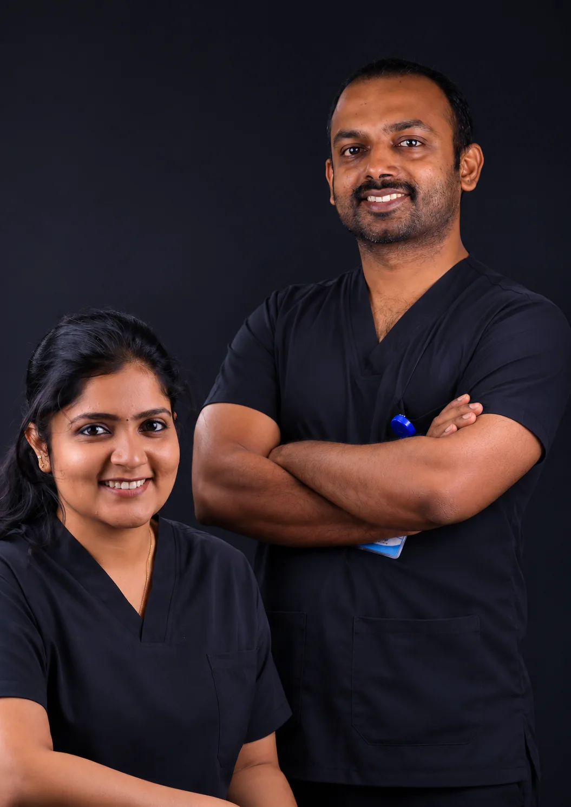

Attention to detail
Careful planning and a focus on quality guide restorative and rehabilitative work.
DentisTree is a dental clinic in Kannur, Kerala, where clinical attention and personal care come together around each patient's needs.

Dentistry involves both science and craft. At DentisTree, we bring careful assessment, restorative expertise and clear conversation into every step of care.
Our clinicians consider the whole picture: what a patient is experiencing, what the clinical findings show, and which treatment choices may be appropriate. We aim to make those choices easier to understand, so patients can take part in decisions about their care.
Based in Kannur, DentisTree provides restorative and rehabilitative dental care, with a particular interest in biomimetic principles and preserving natural tooth structure where clinically appropriate.
Careful planning and a focus on quality guide restorative and rehabilitative work.
We value approaches that preserve natural tooth structure whenever it is clinically appropriate.
We explain findings and options in clear language, making room for questions and preferences.

For us, thoughtful dentistry starts with understanding each tooth and the person behind it. We consider function and appearance together, and discuss suitable options based on an individual assessment.
Biomimetic dentistry reflects this preservation-minded approach. It informs how we think about bonded restorations and the careful restoration of damaged teeth.
Explore biomimetic dentistry →Meet the team and discuss what you need.